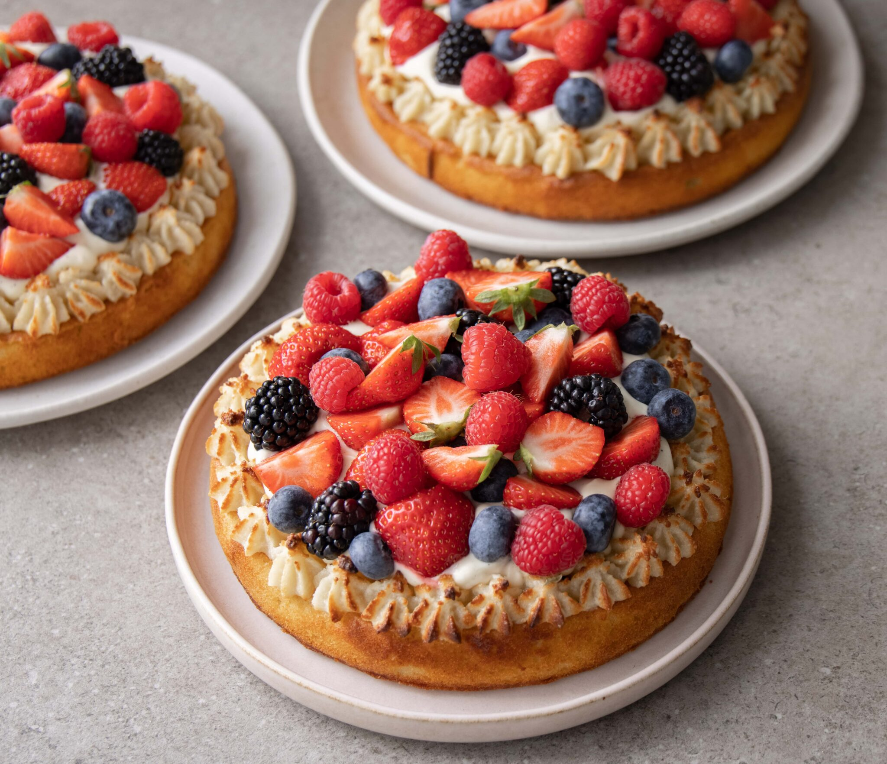

Kransekagetærte med creme og frugt
6 personer - Nem - 75 Minutter

Ingredienser
Bund
- 200g marcipan
- 90g sukker
- 100g smør
- 2 stk. æg
- 30g mel
- 1 tsk bagepulver
Kransekagekant
- 170g marcipan
- 80g sukker
- 1 stk. æggehvide
Creme
- 0,5 brev pulver til kagecreme
- 2 dl. mælk
- 1,5 dl. piskefløde
Andet
- 30g mørk chokolade
- 400g blandede bær
Fremgangsmåde
Bund
Tænd ovnen på 180 °C varmluft.
Marcipan og sukker smuldres sammen med hænderne.
Del blødt smør i mindre stykker og tilsæt det til massen. Pisk nu med en elpisker til du har en luftig masse.
Pisk æggene i et ad gangen. Lad det piske godt, så du får en ensartet masse. Skrab evt. siderne ned undervejs.
Tilsæt til sidst hvedemel og bagepulver og pisk det godt sammen til en luftig masse.
Smør en springform (Ø21) med smør.
Hæld dejen ned i formen og fordel dejen ensartet i hele formen.
Bag bunden i ca. 18-20 min. eller indtil den er let gylden.
Lad bunden køle af, imens du laver kransekagekanten.
Kransekagekant
Når bunden er kølet en smule af, så er det tid til at lave kransekagen. Tænd ovnen på 210 grader varmluft.
Rør alle ingredienserne sammen med en elpisker eller på en køkkenmaskine med piskeris.
Når du har en ensartet masse, så kommes denne op i en sprøjtepose med stjerneformet tyl.
Sprøjt kransekagen langs siden på hele kagen. Hvis der er noget tilovers, så kan du sprøjte det ud som kransekagetoppe og bage efterfølgende.
Bag hele kagen i 5-8 min, men hold øje med dem under bagningen, da alle ovne varmer forskelligt.
Hak chokolade fint. Når kagen bliver taget ud af ovnen, fordel da chokoladen på hele bunden og brug en pensel eller en lille ske til at fordele den smeltede chokolade rundt på hele bunden.
Creme og samling
Vi laver cremen på den nemme måde og bruger et brev med pulver til kagecreme (Dr. Oetker eller Tørsleff). Vi bruger lidt mindre mælk end hvad der står på pakken for at gøre den lidt mere fast.
Sæt din kagecreme/vaniljecreme i køleskabet i 1 times tid.
Pisk piskefløde til flødeskum. Vend forsigtigt kagecreme/vaniljecreme med fløde og fordel cremen udover bunden af kagen.
Skyl frugter og bær og skær dem ud i halve eller kvarte stykker og pynt med dem på hele kagen.
Server kagen med det samme eller sæt på køl indtil servering.
Jordbærkage
10 Personer - Nem - 120 Minutter

Ingredienser
Bund
- 115g vand
- 30g bagekakao
- 90g smør
- 80g lys chokolade
- 180g hvedemel
- 250. sukker
- 1 tsk. vaniljesukker
- 1 tsk. bagepulver
- 0,5 tsk. natron
- 60g creme fraiche
- 1 stk. æg
Hindbærskum
- 150g frosne hindbær
- 4 spsk. sukker
- 2 tsk. citronsaft
- 2 spsk. vand
- 2,5 dl. piskefløde
Chokoladeganache og pynt
- 200g mørk chokolade
- 1 dl. piskefløde
- 125g hindbær
Fremgangsmåde
Chokoladekage
Tænd ovnen på 170 grader varmluft.
Kom smør og chokolade op i en lille gryde. Lad det smelte sammen ved lav varme under omrøring. Når det er smeltet, så tilsættes vand og bagekakao. Sæt til side og lad det køle af.
Bland hvedemel, sukker, vaniljesukker, natron og bagepulver i en skål.
I en anden skål blandes creme fraiche og æg sammen.
Vend chokoladeblandingen sammen med melblandingen.
Rør til sidst æggeblandingen i.
Smør en springform på 23 cm. Du kan også beklæde den med bagepapir.
Hæld dejen over i formen.
Bag kagen i midten af ovnen i ca. 30-40 minutter, alt efter hvor kraftig din ovn er. Begynd at holde øje med den efter 25 minutter.
Tjek om den er færdig ved at stikke en strikkepind, grillspyd eller noget andet tyndt ned i den. Hvis der ikke er ubagt dej på, så er den færdig. Hvis der er lidt ubagt dej på, så giv den lidt længere.
Tag kagen ud og lad den køle helt af.
Hindbærskum
Frosne hindbær, sukker, vand og citronsaft koges let op i en gryde. Bærrene moses en anelse sammen. Lad det simre ved lav varme i 10 minutter, så noget af væsken kan fordampe. Du skal have en fast kompot.
Bærkompotten sættes på køl, indtil den er helt kold (den kan også laves dagen før).
Piskefløde piskes til en fast flødeskum. Vend lidt af hindbærkompotten i af gangen. Hvis din hindbærkompot har meget saft, så undgå at tage alt for meget af det med, da det vil resultere i en rigtig tynd hindbærskum.
Chokoladeganache og pynt
Del den kolde chokoladekage i to.
Placer bunden på det fad, som du vil servere den på. Kom hindbærskum på. Top med den anden chokoladebund.
Hak chokolade groft.
Varm fløde op i en gryde ved lav varme.
Tilsæt chokolade. Rør det hele godt rundt, indtil du får en ensartet chokolade. Tag ganachen af og lad den køle af. Den vil samle sig og stivne mere, når den køler af.
Fordel chokoladeganache på toppen af kagen. Pynt med hindbær.
Sæt kagen på køl indtil servering.